무선설비산업기사 (2013-06-09 기출문제)
1과목: 디지털 전자회로
1. 다음 중 L형 평활회로와 비교한 C형 평활회로의 특성을 바르게 나타낸 것은?
- 직류 출력 전압이 낮다.
- 전압 변동율이 작다.
- 최대 역전압(PIV)이 높다.
- 시정수가 크며, 리플이 증가된다.
(정답률: 79%)

2. 다음 중 정류기의 평활회로에 사용되지 않는 것은?
- 콘덴서
- 저항
- 쵸크코일
- 다이오드
(정답률: 83%)
3. 다음 그림과 같은 회로의 기능은?
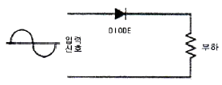
- 반파정류
- 전파정류
- 증폭
- 발진
(정답률: 79%)
4. 다음 중 낮은 주파수 대역에서 높은 주파수 대역에 걸쳐 일정한 크기의 스펙트럼을 가진 연속성 잡음으로 알맞은 것은?
- 트랜지스터 잡음
- 자연잡음
- 백색잡음
- 지터잡음
(정답률: 88%)
5. PNP와 NPN 트랜지스터를 조합하여 이루어진 push-pull 증폭회로를 무엇이라 하는가?
- 컴플리멘터리 SEPP 회로
- 위상반전회로
- OTL
- OCL
(정답률: 73%)
6. 다음 그림과 같은 연산증폭기 회로에서 V1=1[mV], V2=2[mV]일 때 출력 Vo는 얼마인가?
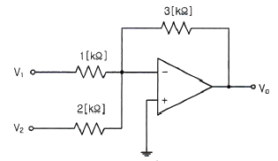
- -4.5[mV]
- -5.5[mV]
- -6[mV]
- -7.5[mV]
(정답률: 71%)
7. 어떤 증폭기의 전압증폭도가 1,000일 때 전압이득은 얼마인가?
- 20[dB]
- 30[dB]
- 60[dB]
- 90[dB]
(정답률: 75%)
8. 무선송신기에 수정진동자를 사용하는 이유로 가장 타당한 것은?
- 발진주파수가 안정하기 때문이다.
- 고조파를 쉽게 얻을 수 있기 때문이다.
- 일그러짐이 적은 파형을 얻기 위해서이다.
- 발진주파수를 쉽게 변경할 수 있기 때문이다.
(정답률: 71%)
9. 다음 중 발진조건으로 알맞은 것은? (단, A=증폭도, β=되먹임률)
- Aβ=1
- Aβ<1
- Aβ>1
- Aβ≠1
(정답률: 88%)
10. 다음 변조방식 중 아날로그 변조방식이 아닌 것은?
- PPM
- PAM
- PCM
- PWM
(정답률: 86%)
11. 다음 중 최고 주파수가 8[kHz]인 신호파를 펄스코드변조(PCM)할 경우 표본화 주기로 적합한 것은?
- 1.25[μs]
- 6.25[μs]
- 12.5[μs]
- 62.5[μs]
(정답률: 64%)
12. 다음 그림과 같은 회로의 명칭으로 가장 적합한 것은? (단, Vi>VR)
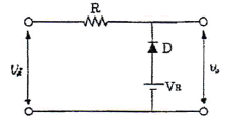
- Clipping Circuit
- Clamping Circuit
- Limiter Circuit
- Slicer Circuit
(정답률: 69%)
13. 트랜지스터의 스위칭 동작에서 turn-off 시간은?
- 지연시간(td)
- 지연시간(td) + 상승시간(tr)
- 축적시간(ts)
- 축적시간(ts) + 하강시간(tf)
(정답률: 83%)
14. 이진수(binary number) 표현으로 "10100001"은 10진수로 얼마인가?
- 121
- 141
- 161
- 181
(정답률: 84%)
15. 다음 중 3초과 코드(excess-3 code)에 대한 설명으로 옳지 않은 것은?
- 자기보수형 코드이다.
- 언웨이티드 코드의 대표적이기도 하다.
- 8421 code에 3(10)을 더하여 만든 것이다.
- BCD 코드보다 연산이 어렵다.
(정답률: 80%)
16. 다음 중 논리계산식이 틀린 것은?
- A+1 = A
- A+A = A
- AㆍA = A
- A+AㆍB = A
(정답률: 84%)
17. n비트 직렬이벽-직렬출력 레지스터를 이용하여 시간 지연회로를 구성할 때, 4비트 레지스터를 사용하였다면 Time Delay는 얼마인가? (단, 클럭 주파수는 1[MHz]이다.)
- 1[μs]
- 2[μs]
- 3[μs]
- 4[μs]
(정답률: 48%)
18. 다음 중 레지스터의 주 기능에 해당하는 것은?
- 스위칭 기능
- 데이터의 일시 저장
- 펄스 발생기
- 회로 동기장치
(정답률: 92%)
19. 다음과 같은 멀티플렉서 회로에서 제어입력 A 와 B가 각각 1일 때 출력 Y의 값은?
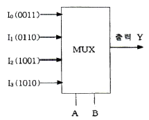
- 0011
- 0110
- 1001
- 1010
(정답률: 79%)
20. 디지털 IC의 정상 동작에 영향을 주지 않고 게이트 출력부에 연결할 수 있는 표준 부하의 숫자를 무엇이라고 하는가?
- 팬 아웃
- 틸트
- 잡음 허용치
- 전달지연 시간
(정답률: 85%)
2과목: 무선통신 기기
21. 수신기의 입력단에 50[μV]의 입력이 가해졌을 때 고주파 증폭기의 이득이 25[dB], 주파수 변환이득이 -15[dB], 중간주파수 증폭부의 이득이 60[dB], 저주파 증폭부의 이득이 30[dB]이면 출력단에 나타나는 전압은?
- 0.25[V]
- 2.5[V]
- 5[V]
- 50[V]
(정답률: 65%)
22. SSB 수신기에서 동기조정(Speech clarifier)을 행하는 목적으로 가장 타당한 것은?
- 링 복조를 하기 때문에
- 반송파와 국부발진주파수 편차를 줄이기 위하여
- 전 반송파방식만을 수신하기 위하여
- 상ㆍ하측파대를 동시에 수신하기 위하여
(정답률: 78%)
23. 97.3[MHz]의 반송파를 최대주파수 편이 75[kHz]로 하고, 10[kHz]의 신호파로 주파수 변조시 점유주파수대폭은 얼마인가?
- 180[kHz]
- 170[kHz]
- 150[kHz]
- 100[kHz]
(정답률: 67%)
24. FM 변조에서 높은 주파수 성분을 강조하여 신호대잡음비(S/N비)를 개선하기 위해서 사용하는 회로는?
- Pre-emphasis 회로
- De-emphasis 회로
- Discriminator 회로
- Squelch 회로
(정답률: 88%)
25. 다음 디지털 변조 통신 방식에서 주파수 효율이 높고 고속 통신용으로 가장 적합한 방식은?
- 폭 편이 변조 방식
- 진폭 변이 변조 방식
- 주파수 편이 변조 방식
- 위상 편이 변조 방식
(정답률: 78%)
26. 다음 중 소형 저궤도 위성 시스템에 적용된 다중 접속 방식과 맞게 연결된 것은?
- LEOSAT - FDMA
- STARSYS - SSMA
- VITASAT - CDMA
- ORBCOMM - TDMA
(정답률: 74%)
27. 다양한 통신 시스템에서 안테나는 상호간에 송ㆍ수신하기 위한 기본 요소이다. 다음 중 안테나의 파라미터에 해당하지 않는 것은?
- 실효복사전력
- 전압 정재파비
- 안테나 편파
- 안테나 전원 장치
(정답률: 88%)
28. SHF대 위성수신기에서 저잡음 증폭기로 주로 사용되는 것은?
- MASER
- PARAMETRIC 증폭기
- TWT 증폭기
- TDA
(정답률: 67%)
29. 이동통신 방식에는 CDMA와 TDMA가 있는데 이중 CDMA의 부호화 방식은?
- VSELP
- QCELP
- GMSK
- RPE-LTP
(정답률: 58%)
30. 통신위성 시스템은 크게 페이로드 시스템과 버스 시스템으로 구성된다. 버스 시스템에 해당되지 않는 것은?
- 자세궤도제어 시스템(AOCS)
- 추진(Propulsion) 시스템
- 전원공급 시스템
- 안테나 시스템
(정답률: 59%)
31. 수신기의 S/N 비를 개선하기 위한 방법으로 가장 적합하지 않은 것은?
- 주파수 변환 이득을 크게 한다.
- 수신기 대역폭을 넓힌다.
- 믹서 전단에 고주파 증폭기를 설치한다.
- 국부 발진기의 출력에 필터를 설치한다.
(정답률: 82%)
32. 다음 중 축전지 취급상 주의사항으로 적합하지 않은 것은?
- 방전 직후 곧 충전할 것
- 불순물이 들어가지 않도록 할 것
- 충전 전류는 과대하게 할 것
- 전해액면이 극판 위에 차 있게 할 것
(정답률: 84%)
33. 다음 중 축전지의 충전의 종류가 아닌 것은?
- 단순 충전
- 평상 충전
- 균등 충전
- 부동 충전
(정답률: 87%)
34. 다음 중 휴대단말기의 성능을 검증하기 위해 차량을 이용한 주행시험(driving test)을 진행할 경우 차량 시거잭(Cigar jack) 전원에 노트북 및 휴대전화 충전기를 연결하고자 한다. 이 때 필요한 장치는 무엇인가?
- 무정전전원장치(UPS)
- 인버터(Inverter)
- AVR(uninterruptible Power Supply)
- 정류기(rectifier)
(정답률: 85%)
35. 특성임피던스 Zo가 75[Ω]인 선로 종단에 Zo보다 적은 부하저항을 접속한 후 송신단자에서 신호를 인가하였다. 이때 선로상의 파형을 측정하였더니 최고전압이 25[V], 최저전압이 5[V]이었다. 이 선로의 전압정재파비(VSWR)은 얼마인가?
- 4
- 5
- 6
- 8
(정답률: 83%)
36. 포락선 검파기에서 Diagonal Clipping이 발생하는 이유로 가장 적합한 것은?
- 검파기 회로의 시정수가 너무 작은 경우
- 검파기 회로의 시정수가 너무 큰 경우
- 검파기의 부하가 콘덴서만으로 구성된 경우
- 검파기의 부하가 저항만으로 구성된 경우
(정답률: 84%)
37. 다음 중 스미스 챠트(Smith chart)를 이용하여 구할 수 없는 것은?
- 임피던스
- 역율
- 정재파비
- 반사계수
(정답률: 84%)
38. 다음 중 λ/4 수직접지안테나의 실효고를 옳게 나타낸 것은?
- λ/π
- λ/2π
- λ/4π
- λ/8π
(정답률: 88%)
39. 고주파 회로의 측정시 측정기의 올바른 사용법이 아닌 것은?
- 측정기의 접지단자를 접지시킨다.
- 측정회로의 거리를 짧게 결선하여 측정한다.
- 측정기를 차폐시킨다.
- 측정회로와 연결되는 선은 가능한 가는 선을 이용한다.
(정답률: 87%)
40. 전원장치의 출력 직류 전압이 50[V], 출력 교류 실효전압이 1[V]인 경우 이 전원장치의 맥동률은 몇 [%]인가?
- 0.5
- 1
- 2
- 5
(정답률: 71%)
3과목: 안테나 개론
41. 다음 중 위상속도와 군속도의 관계로 가장 적합한 것은? (단, Vp : 위상속도, Vq : 군속도, C : 광속도이다.)
- Vp∙Va
- Vp∙Va=C2
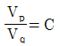
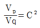
(정답률: 69%)
42. 맥스웰에 의해 완성된 전기와 전자 관련 4개 방정식과 관련 없는 것은?
- ∇×H = J+(∂D/∂t)
- ∇ㆍH = ρ
- ∇ㆍE = ∞
- ∇ㆍB = 0
(정답률: 85%)
43. 다음 설명 중 틀린 것은?
- 전파는 종파이다.
- 정전계에서는 에너지 이동이 없다.
- 유도전자계는 거리의 제곱에 반비례하여 감쇠한다.
- 복사전자계는 거리에 반비례하여 감쇠한다.
(정답률: 91%)
44. 다음 급전선의 정합과 관련된 설명 중 바르지 못한 것은?
- 급전선 단이 개방되어 있어도 선로의 길이가 무한히 긴 경우 반사파가 없는 전송이 가능하다.
- 반사파가 없는 전송의 경우 전압, 전류 분포는 선로상 어느 점에서나 같다.
- 진행파의 경우 선로상의 전압, 전류 위상은 각 점에 따라 다르다.
- 정재파비는 임피던스 정합이 이뤄진 경우에 발생되며 전송손실이 없으며 양방향으로 진행하는 파이다.
(정답률: 75%)
45. 특성 임피던스에 대한 설명으로 잘못 설명된 것은?
- 횡축방향의 성분과 물질 상수에 의해 영향 받는다.
- 입사되는 파의 전압과 전류에 의해 결정된다.
- 전압과 전류의 비가 항상 일정하다.
- 전송선로의 기하학적 구조에 좌우된다.
(정답률: 45%)
46. 어떤 급전선의 종단을 단락시켰을 때의 입력 임피던스가 25[Ω]이고 개방했을 때는100[Ω]이었다. 이 급전선의 특성 임피던스는 얼마인가?
- 25[Ω]
- 50[Ω]
- 100[Ω]
- 250[Ω]
(정답률: 76%)
47. 임피던스 정합 회로 중 분포 정수 회로에 의한 정합이 아닌 것은?
- Q변성기에 의한 정합
- 스터브에 의한 정합
- S형 정합
- Y형 정합
(정답률: 76%)
48. 무손실 전송 선로에서 특성 임피던스와 R, G를 나타낸 식과 값으로 바른 것은?
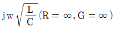
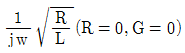
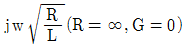
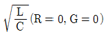
(정답률: 70%)
49. 공진회로에서 1.5[H]의 인덕터와 0.4[μF]의 캐피시터가 직렬 연결된 경우 공진주파수는 약 얼마인가?
- 103[Hz]
- 2⑤[Hz]
- 301[Hz]
- 4⑤[Hz]
(정답률: 77%)
50. 다음 중 미소 다이폴 공중선으로부터 발생하는 전자계 중 원거리에서 주가되는 전자계는 어느 것인가?
- 정전계
- 정자계
- 유도전계
- 복사전계
(정답률: 78%)
51. 임의 안테나 A, B에 같은 전력을 공급하였다. 이때 최대 방사방향으로 임의 점의 전계강도는 각각 1000[μV/m], 100[μV/m]이었다. 두 안테나 이득의 비는 얼마인가?
- 10
- 20
- 30
- 40
(정답률: 66%)
52. 수직접지안테나에 대한 설명으로 옳지 않은 것은?
- 수직 편파를 발사한다.
- 길이가 λ/4일 때에는 반드시 전압급전을 사용하여야 한다.
- 수평면내 지향성은 무지향성이다.
- 길이가 λ/4보다 긴 경우에는 직렬로 콘덴서를 삽입해서 공진시킨다.
(정답률: 74%)
53. 안테나 선로의 중간에 코일(loading coil)을 삽입하면 어떤 역할을 하는가?
- 등가적으로 안테나의 길이가 길어진 것과 같은 효과가 있다.
- 더 높은 주파수에서 공진하는 효과가 있다.
- 지향성을 변화시키는 효과가 있다.
- 임피던스를 정가시키는 작용을 한다.
(정답률: 79%)
54. 다음 중 이득이 크고 광대역 특성을 가져 초단파대 TV수신용 안테나로 널리 사용되는 것은?
- 야기 안테나
- 애드콕 안테나
- 파라볼라 안테나
- 반파장 다이폴 안테나
(정답률: 78%)
55. 다음 중 등가지구 반경계수(K)에 대한 설명으로 적합하지 않은 것은?
- 대기의 수직면내에서의 굴절률 분포를 알 수 있다.
- 보통은 1보다 크지만 작은 경우도 있다.
- 열대지방의 K값이 한대지방보다 크다.
- K값이 1에 가까울수록 굴절이 심하다는 뜻이다.
(정답률: 81%)
56. 다음 중 지상파의 전파 모드와 관계가 없는 것은?
- 주파수
- 대지정수
- 온도
- 편파면
(정답률: 71%)
57. 다음 중 제1종 감쇠의 설명으로 틀린 것은?
- 사용주파수 제곱에 비례한다.
- 전자밀도에 비례한다.
- 평균충돌 횟수에 거의 비례한다.
- 굴절률에 반비례한다.
(정답률: 59%)
58. 다음 중 MUF를 결정하는 요소에 해당하지 않는 것은?
- 송ㆍ수신간의 거리
- 전리층의 높이
- 임계 주파수
- 송신전력
(정답률: 57%)
59. 다음 중 전리층 반사파 전파의 특징 중 옳지 않은 것은?
- 전리층 반사파는 원거리까지 전파된다.
- 전리층을 뚫고 나갈 때의 감쇠는 파장이 길수록 적다.
- 불감 지대가 생길 때가 있다.
- 전리층의 영향을 받아 각종 fading으로 대체로 불안정하다.
(정답률: 67%)
60. 다음 중 전리층을 이용한 단파통신에서 최적운용주파수에 대한 설명으로 가장 적합한 것은?
- 전리층 반사주파수 중에서 가장 낮은 주파수
- 전리층 반사주파수 중에서 가장 높은 주파수
- 최저사용주파수의 85[%]에 해당하는 주파수
- 최고사용주파수의 85[%]에 해당하는 주파수
(정답률: 88%)
4과목: 전자계산기 일반 및 무선설비기준
61. 다음 중 비교적 속도가 빠른 I/O 장치를 통해, 특정한 하나의 장치를 독점하여 입ㆍ출력으로 사용하는 채널은?
- Simple Channel
- Select Channel
- Byte Multiplexer Channel
- Block Multiplexer Channel
(정답률: 78%)
62. 다음 중 고정 소수점에 대한 설명으로 틀린 것은?
- 컴퓨터 내부에서 주로 정수를 표현할 때 사용되는 데이터 형식이다.
- 레지스터의 첫 번째 비트는 부호비트이고, 나머지는 정수부이다.
- 2바이트 정수형과 4바이트 정수형이 있다.
- 부호 비트는 정수부가 음수이면 "0", 양수이면 "1"로 표현한다.
(정답률: 72%)
63. 주 기억장치에 저장된 명령어를 하나하나씩 인출하여 연산코드 부분을 해석한 다음 해석한 결과에 따라 적합한 신호로 변환하여 각각의 연산장치와 메모리에 지시 신호를 내는 것은?
- 연산 논리 기구(ALU)
- 입출력장치(I/O unit)
- 채널(Channel)
- 제어장치(control unit)
(정답률: 77%)
64. 다음 문장이 설명하는 것으로 알맞은 것은?
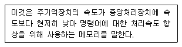
- Virtual Memory
- Cache Memory
- Associative Memory
- Random Access Memory
(정답률: 82%)
65. 10진수 10에 대해 2진법, 8진법 및 16진법의 표현으로 옳은 것은?
- 1001, 10, 10
- 1001, 11, A
- 1010, 12, A
- 1010, 12, B
(정답률: 86%)
66. 논리적으로 상호 연관된 레코드나 파일들의 집합이며 다수의 응용 시스템들의 사용되기 위하여 통합, 저장된 운영 데이터의 집합을 무엇이라는가?
- 레코드
- 파일
- 필드
- 데이터베이스
(정답률: 87%)
67. 컴퓨터 시스템의 운영을 제어하고 지원하는 프로그램에 속하지 않는 것은?
- 컴파일러
- 운영체제
- 로더
- 데이터베이스
(정답률: 70%)
68. 반도체 기억소자로서 리프레시(refresh)가 필요한 기억장치는?
- SRAM
- DRAM
- Mask ROM
- EPROM
(정답률: 79%)
69. 다음 중 2진수 1011에 대한 2의 보수(2's complement)는?
- 1010
- 0100
- 0101
- 0111
(정답률: 78%)
70. 다음 중 운영체제에 대한 설명으로 틀린 것은?
- 컴퓨터 시스템을 효율적으로 관리
- 컴퓨터를 사용자가 편리하게 이용 가능
- 업무를 처리하기 위해 사용자가 개발한 소프트웨어
- 사용자와 하드웨어 사이의 interface
(정답률: 82%)
71. 다음 중 국립전파연구원장의 지정시험기관 검사시 확인 사항으로 틀린 것은?
- 조직 및 인력 현황
- 품질관리규정의 이행여부
- 시험환경 및 시험시설의 적합성 유지여부
- ISO14001 요건에 따른 적합성 여부
(정답률: 63%)
72. 아마추어국의 개설조건 중 이동하는 아마추어국의 경우 공중선전력은 몇 와트 이하이어야 하는가?
- 500와트
- 300와트
- 100와트
- 50와트
(정답률: 72%)
73. 통신보안의 교육에 관한 필요한 사항을 지정하고있는 것은?(관련 규정 개정전 문제로 여기서는 기존 정답인 3번을 누르면 정답 처리됩니다. 자세한 내용은 해설을 참고하세요.)
- 전파법
- 전파법시행령
- 미래창조과학부 고시
- 무선설비규칙
(정답률: 81%)
74. 다음 중 전파자원을 확보하기 위하여 수립 시행하는 사항이 아닌 것은?
- 새로운 주파수의 이용기술 개발
- 이용중인 주파수의 이용효율 향상
- 주파수의 국제등록
- 국가간 전파의 잡음을 없애고 방지하기 위한 협의ㆍ조정
(정답률: 50%)
75. 미래창조과학부장관이 주파수할당을 하고자 하는 경우, 주파수할당을 하는 날로부터 얼마 전까지 할당관련 공고를 하여야 하는가?
- 15일 전
- 1개월 전
- 3개월 전
- 6개월 전
(정답률: 71%)
76. 다음 중 미래창조과학부에서 주파수 할당을 취소할 수 있는 경우가 아닌 것은?
- 기간통신사업의 허가가 취소된 경우
- 종합유선방송사업의 허가가 취소된 경우
- 전송망사업의 등록이 취소된 경우
- 정보통신공사업의 등록이 취소된 경우
(정답률: 68%)
77. 미래창조과학부가 수행하는 전파 감시의 목적으로 볼 수 없는 것은?
- 전파의 효율적 이용 촉진을 위하여
- 혼신의 신속한 제거를 위하여
- 전파 이용 질서의 유지 및 보호를 위하여
- 주파수에 대한 사용료를 부과, 징수하기 위하여
(정답률: 88%)
78. 무선설비의 적합성평가 처리 방법 중 연속동작시험 조건으로 틀린 것은?
- 통상의 사용조건으로 8시간 동작시켰을 때
- 통상의 사용조건으로 24시간 동작시켰을 때
- 통상의 사용조건으로 48시간 동작시켰을 때
- 통상의 사용조건으로 500시간 동작시켰을 때
(정답률: 77%)
79. 다음 중 통신 보안책임자의 수행업무로 틀린 것은?
- 무선국 운용에 따른 통신보안업무 활동계획 수립ㆍ시행
- 무선통신을 이용하여 발신하고자 하는 통신분에 대한 보안성 검토
- 불필요한 내용의 무선통신 사용 억제
- 암호와 평문의 혼합사용
(정답률: 86%)
80. 무선국의 시설자는 통신상 보안을 요하는 사항에 하여 통신보안용 약호를 정한 후 누구의 승인을 얻어 사용하여야 하는가?
- 전파진흥협회장
- 국립전파연구원장
- 중앙전파관리소장
- 한국방송통신전파진흥원장
(정답률: 72%)
C형 평활회로는 L형 평활회로와 달리 콘덴서를 사용하여 전압을 평활화하는 회로이다. 이 때문에 직류 출력 전압이 낮아지고, 전압 변동율이 작아진다. 하지만 콘덴서는 역전압을 받으면 파괴될 수 있기 때문에 최대 역전압(PIV)이 높은 다이오드를 사용해야 한다. 따라서 C형 평활회로는 최대 역전압(PIV)이 높다는 특징을 가진다. 하지만 콘덴서를 사용하기 때문에 시정수가 크며, 리플이 증가될 수 있다는 단점도 있다.